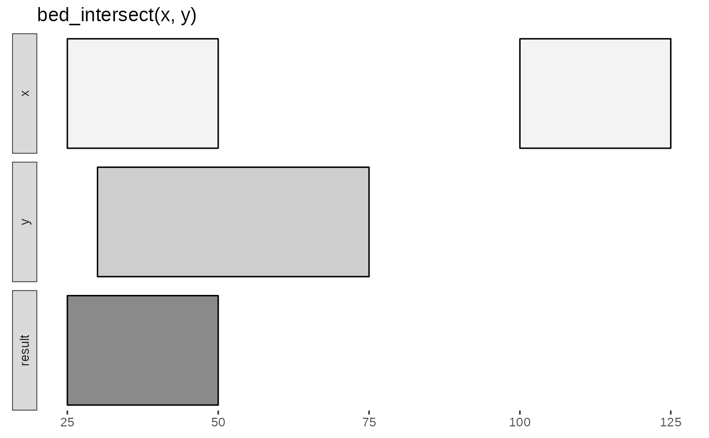
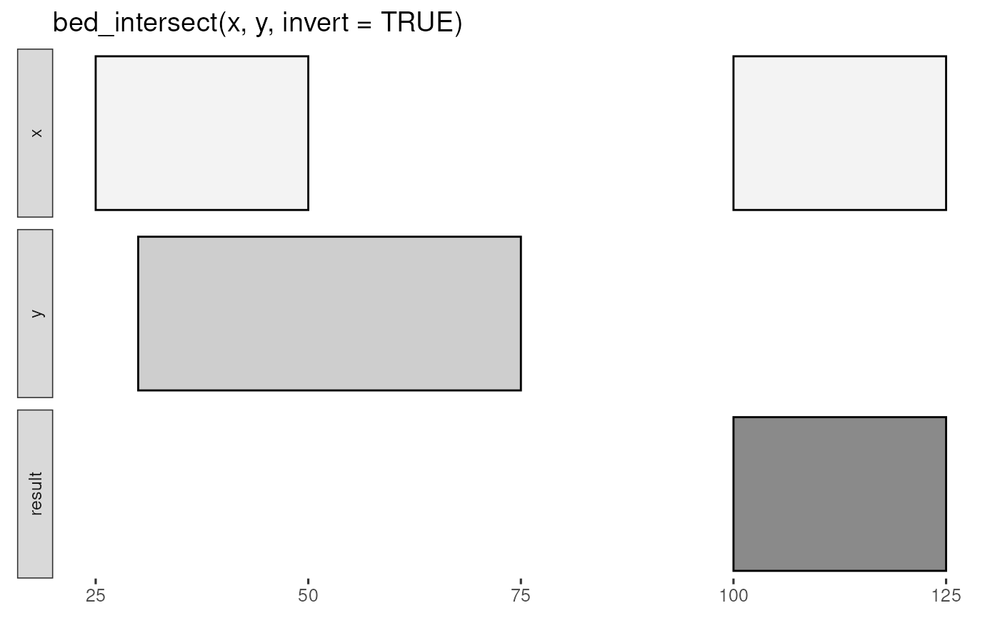

Report intersecting intervals from x and y tbls. Book-ended intervals
have .overlap values of 0 in the output.
Usage
bed_intersect(x, ..., invert = FALSE, suffix = c(".x", ".y"))Value
ivl_df with original columns from x and y suffixed with .x
and .y, and a new .overlap column with the extent of overlap for the
intersecting intervals.
If multiple y tbls are supplied, the .source contains variable names
associated with each interval. All original columns from the y are suffixed
with .y in the output.
If ... contains named inputs (i.e a = y, b = z or list(a = y, b = z)),
then .source will contain supplied names (see examples).
Details
input tbls are grouped by chrom by default, and additional
groups can be added using dplyr::group_by(). For example,
grouping by strand will constrain analyses to the same strand. To
compare opposing strands across two tbls, strands on the y tbl can
first be inverted using flip_strands().
See also
https://bedtools.readthedocs.io/en/latest/content/tools/intersect.html
Other multiple set operations:
bed_closest(),
bed_coverage(),
bed_map(),
bed_subtract(),
bed_window()
Examples
x <- tibble::tribble(
~chrom, ~start, ~end,
"chr1", 25, 50,
"chr1", 100, 125
)
y <- tibble::tribble(
~chrom, ~start, ~end,
"chr1", 30, 75
)
bed_glyph(bed_intersect(x, y))

bed_glyph(bed_intersect(x, y, invert = TRUE))

x <- tibble::tribble(
~chrom, ~start, ~end,
"chr1", 100, 500,
"chr2", 200, 400,
"chr2", 300, 500,
"chr2", 800, 900
)
y <- tibble::tribble(
~chrom, ~start, ~end, ~value,
"chr1", 150, 400, 100,
"chr1", 500, 550, 100,
"chr2", 230, 430, 200,
"chr2", 350, 430, 300
)
bed_intersect(x, y)
#> # A tibble: 6 × 7
#> chrom start.x end.x start.y end.y value.y .overlap
#> <chr> <dbl> <dbl> <dbl> <dbl> <dbl> <int>
#> 1 chr1 100 500 150 400 100 250
#> 2 chr1 100 500 500 550 100 0
#> 3 chr2 200 400 230 430 200 170
#> 4 chr2 200 400 350 430 300 50
#> 5 chr2 300 500 230 430 200 130
#> 6 chr2 300 500 350 430 300 80
bed_intersect(x, y, invert = TRUE)
#> # A tibble: 1 × 3
#> chrom start end
#> <chr> <dbl> <dbl>
#> 1 chr2 800 900
# start and end of each overlapping interval
res <- bed_intersect(x, y)
dplyr::mutate(res,
start = pmax(start.x, start.y),
end = pmin(end.x, end.y)
)
#> # A tibble: 6 × 9
#> chrom start.x end.x start.y end.y value.y .overlap start end
#> <chr> <dbl> <dbl> <dbl> <dbl> <dbl> <int> <dbl> <dbl>
#> 1 chr1 100 500 150 400 100 250 150 400
#> 2 chr1 100 500 500 550 100 0 500 500
#> 3 chr2 200 400 230 430 200 170 230 400
#> 4 chr2 200 400 350 430 300 50 350 400
#> 5 chr2 300 500 230 430 200 130 300 430
#> 6 chr2 300 500 350 430 300 80 350 430
z <- tibble::tribble(
~chrom, ~start, ~end, ~value,
"chr1", 150, 400, 100,
"chr1", 500, 550, 100,
"chr2", 230, 430, 200,
"chr2", 750, 900, 400
)
bed_intersect(x, y, z)
#> # A tibble: 11 × 8
#> chrom start.x end.x start.y end.y value.y .source .overlap
#> <chr> <dbl> <dbl> <dbl> <dbl> <dbl> <chr> <int>
#> 1 chr1 100 500 150 400 100 y 250
#> 2 chr1 100 500 150 400 100 z 250
#> 3 chr1 100 500 500 550 100 y 0
#> 4 chr1 100 500 500 550 100 z 0
#> 5 chr2 200 400 230 430 200 y 170
#> 6 chr2 200 400 230 430 200 z 170
#> 7 chr2 200 400 350 430 300 y 50
#> 8 chr2 300 500 230 430 200 y 130
#> 9 chr2 300 500 230 430 200 z 130
#> 10 chr2 300 500 350 430 300 y 80
#> 11 chr2 800 900 750 900 400 z 100
bed_intersect(x, exons = y, introns = z)
#> # A tibble: 11 × 8
#> chrom start.x end.x start.y end.y value.y .source .overlap
#> <chr> <dbl> <dbl> <dbl> <dbl> <dbl> <chr> <int>
#> 1 chr1 100 500 150 400 100 exons 250
#> 2 chr1 100 500 150 400 100 introns 250
#> 3 chr1 100 500 500 550 100 exons 0
#> 4 chr1 100 500 500 550 100 introns 0
#> 5 chr2 200 400 230 430 200 exons 170
#> 6 chr2 200 400 230 430 200 introns 170
#> 7 chr2 200 400 350 430 300 exons 50
#> 8 chr2 300 500 230 430 200 exons 130
#> 9 chr2 300 500 230 430 200 introns 130
#> 10 chr2 300 500 350 430 300 exons 80
#> 11 chr2 800 900 750 900 400 introns 100
# a list of tbl_intervals can also be passed
bed_intersect(x, list(exons = y, introns = z))
#> # A tibble: 11 × 8
#> chrom start.x end.x start.y end.y value.y .source .overlap
#> <chr> <dbl> <dbl> <dbl> <dbl> <dbl> <chr> <int>
#> 1 chr1 100 500 150 400 100 exons 250
#> 2 chr1 100 500 150 400 100 introns 250
#> 3 chr1 100 500 500 550 100 exons 0
#> 4 chr1 100 500 500 550 100 introns 0
#> 5 chr2 200 400 230 430 200 exons 170
#> 6 chr2 200 400 230 430 200 introns 170
#> 7 chr2 200 400 350 430 300 exons 50
#> 8 chr2 300 500 230 430 200 exons 130
#> 9 chr2 300 500 230 430 200 introns 130
#> 10 chr2 300 500 350 430 300 exons 80
#> 11 chr2 800 900 750 900 400 introns 100